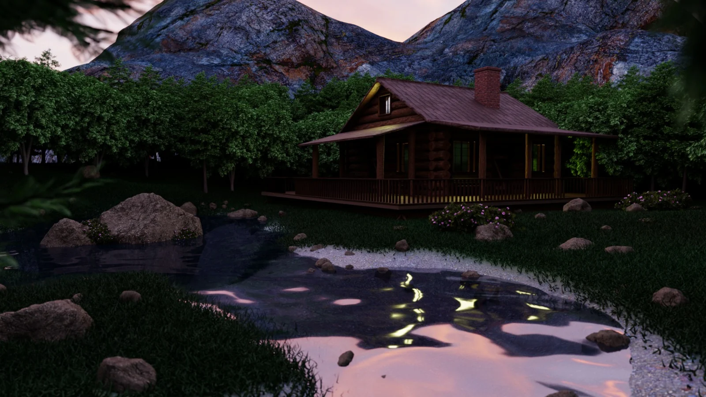
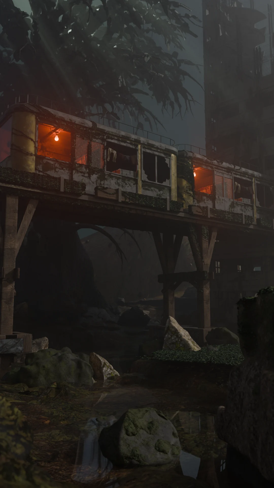

15 worksçalışma
3D3D
Scenes, objects and experiments in form.Mekânlar, objeler ve form denemeleri.

Animation student / TürkiyeAnimasyon öğrencisi / Türkiye
Portfolio — 2026
3D environments, objects & visual stories.
A portfolio by Yavuzhan Önder.3D mekânlar, objeler ve görsel hikâyeler.
Yavuzhan Önder’in portfolyosu.
Featured studyÖne çıkan çalışma 01 / 03
Form. Atmosphere. A sense of place.Form. Atmosfer. Bir mekân hissi.
Explore my workProjelerimi keşfetA selection of my visual studiesGörsel çalışmalarımdan bir seçki
Two ways to explore.
3D & 2D.İki farklı bakış.
3D & 2D.

Built in Blender.
Shaped by curiosity.Blender’da üretildi.
Merakla şekillendi.
The person behind the workÇalışmaların arkasındaki kişi
I’m Yavuzhan, an animation student based in Türkiye. I create 3D environments, props and visual studies.Ben Yavuzhan. Türkiye’de yaşayan bir animasyon öğrencisiyim. 3D çevreler, proplar ve görsel çalışmalar üretiyorum.
My work explores atmosphere, readable silhouettes and game-oriented design. I’m interested in how light, texture and composition turn a collection of shapes into something with a story.Çalışmalarımda atmosfer, okunabilir silüetler ve oyun odaklı tasarıma odaklanıyorum. Işık, doku ve kompozisyonun bir formu hikâyesi olan bir şeye dönüştürmesi ilgimi çekiyor.
Have a project in mind?Aklında bir proje mi var?